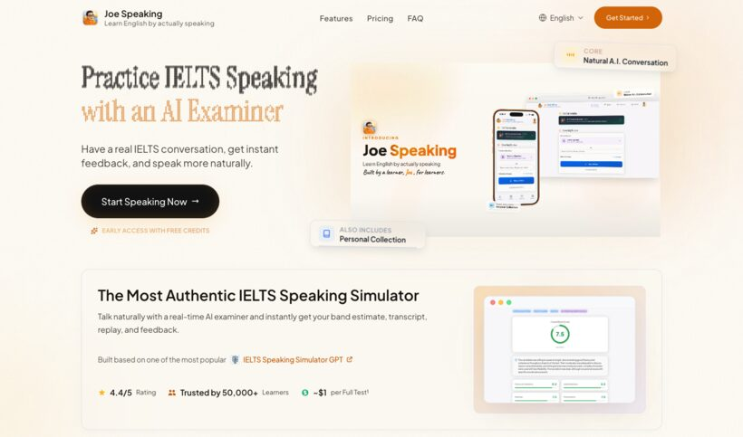

One story, a bigger question
This is a 2-minute story about how Canada helped Joe become a builder, what shifted when the pathway changed, and why people already building here need fair ways to be recognized.
At a glance
Personal story.Structural question.
- Canada helped Joe Hu become a builder.
- The work is visible — a product, a company, a community.
- Then Ontario redesigned the Ontario Immigrant Nominee Program (OINP). The former graduate streams will issue no more invitations.
- Joe is one example. The question is bigger:
does Canada know how to keep builders?
Evidence and resources
Proof behind the story
What Joe built, who’s vouched for it, and the official record of what changed.

What he built Joe Speaking An AI speaking coach built from his own English-speaking struggle — now used by 1,200+ learners across 30+ countries. Who noticed YC Startup School 2026 Hand-picked for Y Combinator’s Startup School 2026 — selected from a highly competitive founder pool. Where it started Joe’s Canada journey The longer essay: leaving an old work rhythm, rebuilding confidence in Canada, and turning that space into Joe Speaking.The ask
Build fair pathways for people already contributing
Job offers and language scores matter. So do the products, companies, and research people build first. Some contribution shows up before the immigration system has a category for it — fair policy should protect the people caught in that gap.
-
Mid-change transition
Protect people caught mid-change
People made tuition, career, and life decisions around published graduate streams — some were already in the process. When rules change mid-stream, there should be a clear transition, not sudden uncertainty.
-
Independent graduate pathways
Keep independent graduate pathways
Masters and PhD talent should have stable routes into research, startups, teaching, and community work — without collapsing everything into one employer-defined track.
-
Ecosystem bridge
Reward what graduates actually build
Canada should give graduates more ways to show what they can do — through startups, research, products, and community work — and help early talent grow into Canada’s builder ecosystem.
For the full policy detail, read my December 2025 feedback on Proposal 25-MLITSD019.
This page is public awareness, not immigration advice; official sources are linked where specific programs are mentioned.
Quick answers
Questions people may ask
What is this page about?
Joe Hu’s story is one example of a broader question: can Canada retain early-stage contributors it helped train while their value is still early — before the system has a way to measure it?
What changed?
Ontario redesigned the Ontario Immigrant Nominee Program (OINP). Former graduate streams will issue no more invitations, leaving some people who planned around that path in uncertainty.
What is the ask?
Joe is asking for fair transitions, independent graduate pathways, and bridges into Canada’s economy, research, and communities.
How can people help?
People can support the message, share the video with Canada's tech, startup, university, media, or policy communities, or add their own story if they are seeing the same pattern.
Public signal
Help this reach people who should see the pattern
If this resonates, one click is enough. It’s not a petition — it’s a public signal that Canada’s tech, startup, university, and policy communities should pay attention to the builders already here.
No account required. We store the minimum needed to count one support signal and prevent duplicates — how we count & privacy.
Thank you — your support is counted.
supporter of fair pathways for people already building here
Now share it with someone in Canada’s tech, startup, university, media, or policy community.
Canada helped Joe become a builder · oinp.hubeiqiao.com
Share your story
Are you seeing the same pattern?
Joe is one example. If you are a student, graduate, founder, employer, professor, investor, or community member seeing the same pattern, add your story. A few concrete examples can make the issue harder to ignore.
Thank you — your story is in.
It’ll be reviewed before any public display — and your support is counted either way.